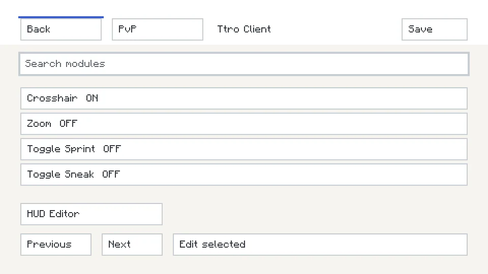
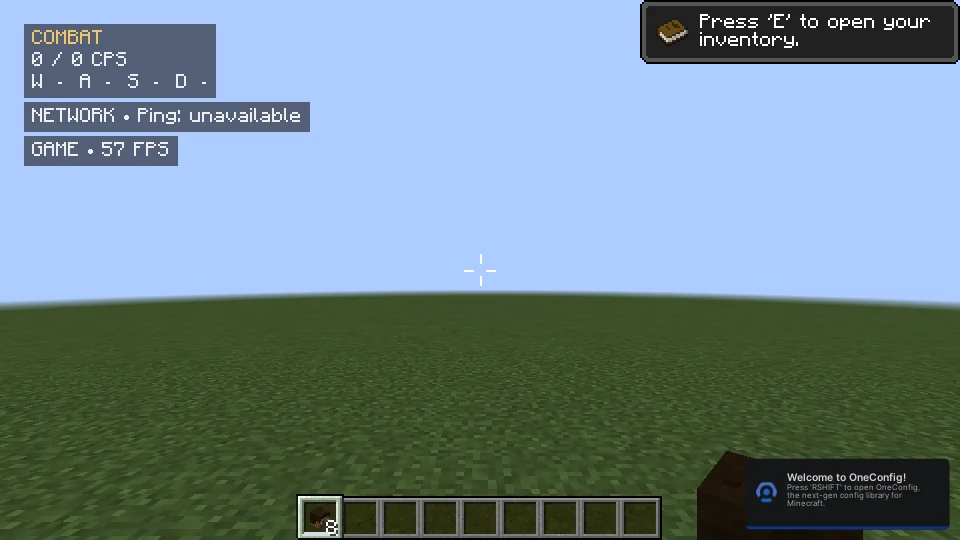

Input & Inventory
Mouse Tweaks 2.6.2の操作を統合。ドラッグ、回収、Shift転送、ホイール転送を個別に設定。
TTRO CLIENT / MINECRAFT JAVA EDITION 1.8.9
Microsoft Login、Profile、PLAY。
Windows向けのMinecraft 1.8.9 PvP Client。
Development Alpha · 0.3.0-alpha.1 · Windows x64
Download for Windows · 確認中公式Releaseの配布状況を確認しています。
すべてのReleasesと検証状況 ↗UIコンセプト · 性能測定値ではありません
BUILT AROUND YOUR MATCH
Mouse Tweaks 2.6.2の操作を統合。ドラッグ、回収、Shift転送、ホイール転送を個別に設定。
Combat、Status、Network、GameのClusterと従来型配置。Smart Scoreboardは解析できない内容をVanilla表示へ戻します。
Profile、RAM、Resource Pack、Mod、更新、修復を管理するWindowsネイティブアプリ。Microsoft認証の製品設定・実機QAは継続中です。
Launcher内でModrinthの1.8.9 Resource Pack・Forge Modを探し、カードのINSTALLから追加。Packは自動検証後に有効化。InstalledでON/OFF、優先順位、更新、削除を管理します。
ACTUAL GAME / QA BUILD


DOWNLOAD WITH CONTEXT
このClientは開発中です。Lunar級以上の完成やBANされないことを保証する段階ではありません。サーバーのルールと、Releaseごとの既知の問題・検証記録を確認してください。
配布EXEはGitHub Releasesに置きます。ダウンロード後、PowerShellで確認できます。
Get-FileHash .\TtroClient-Setup.exe -Algorithm SHA256結果を同じReleaseのchecksums.txtと比較してください。
checksums.txt · 未公開FAQ / SUPPORT
Public Alpha公開後は、このページのDownload for Windowsから公式GitHub ReleaseのSetup.exeを取得してインストールします。ForgeやPrismの手動設定を前提にしません。
必要です。Minecraft Java Editionを所有するアカウントでサインインします。製品版の認証・起動は現在検証中です。
保証しません。検証範囲と既知の問題を確認してください。ソフトウェアのコード署名は未導入で、WindowsのSmartScreen警告が発生する可能性があります。
公式GitHub Issues ↗へ。パスワードやトークン、個人情報を添付しないでください。
CHANGELOG